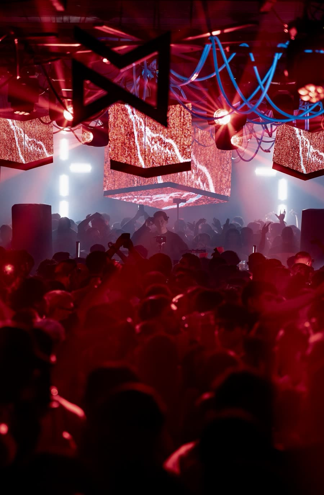

Clubes · pantalla y luz
Iconic Club · Musicplace® Goodfriends
Pared LED, pantalla central sobre el booth y cubos colgados. En un club chico la imagen tiene que sostener toda la sala; en uno grande, tomar el escenario entero. Se decide en el momento, mirando la pista: por eso ningún set sale igual a otro.
